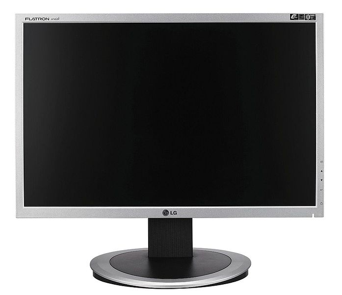
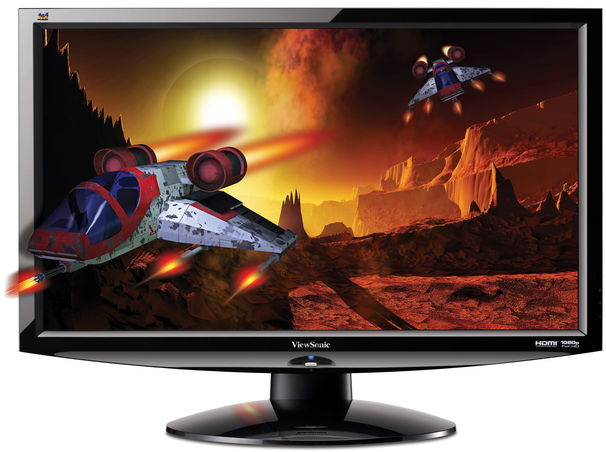

MONITOR

Η οθόνη του υπολογιστή (αγγλικά: μόνιτορ) είναι μια ηλεκτρική συσκευή που απεικονίζει εικόνες δημιουργημένες από
υπολογιστές. Οι περισσότερες σύγχρονες οθόνες αποτελούνται από μια οθόνη υγρών κρυστάλλων, ενώ οι παλιότερες
οθόνες βασίζονταν σε καθοδικό σωλήνα. Η οθόνη περιλαμβάνει την συσκευή απεικόνισης, καθώς και απλά ηλεκτρονικά
κυκλώματα για να παράγει και να διαμορφώνει την εικόνα από το ηλεκτρικό σήμα που στέλνεται από την πηγή, και
ένα συνήθως πλαστικό κάλυμμα. Στον υπολογιστή, υπάρχει κύκλωμα γραφικών (συχνά σε μορφή κάρτας οθόνης), το
οποίο παράγει οπτικό σήμα σε μορφή συμβατή με την οθόνη